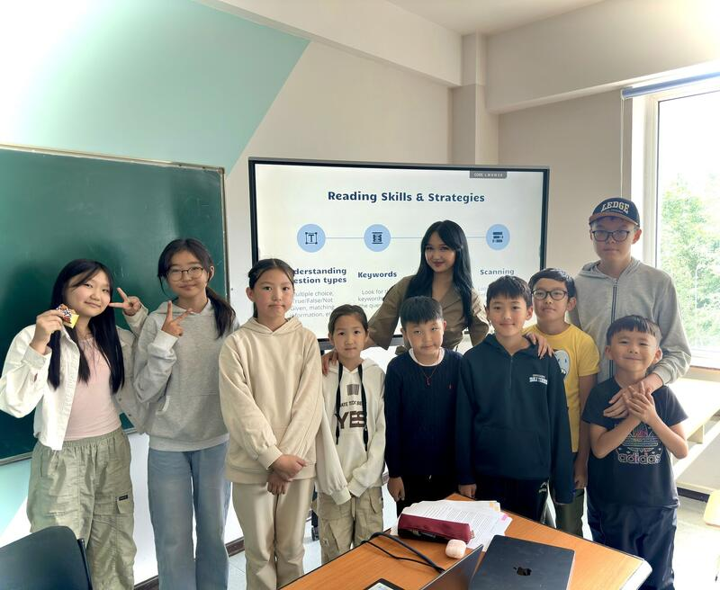
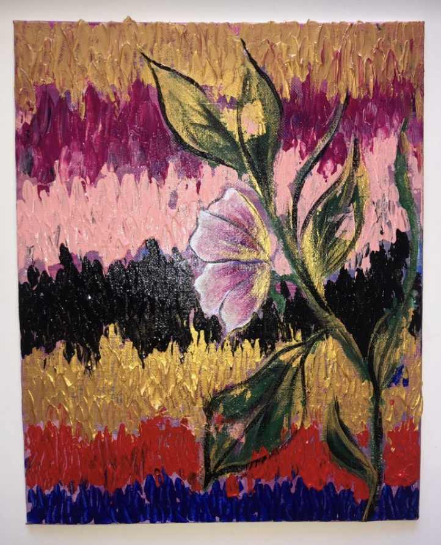
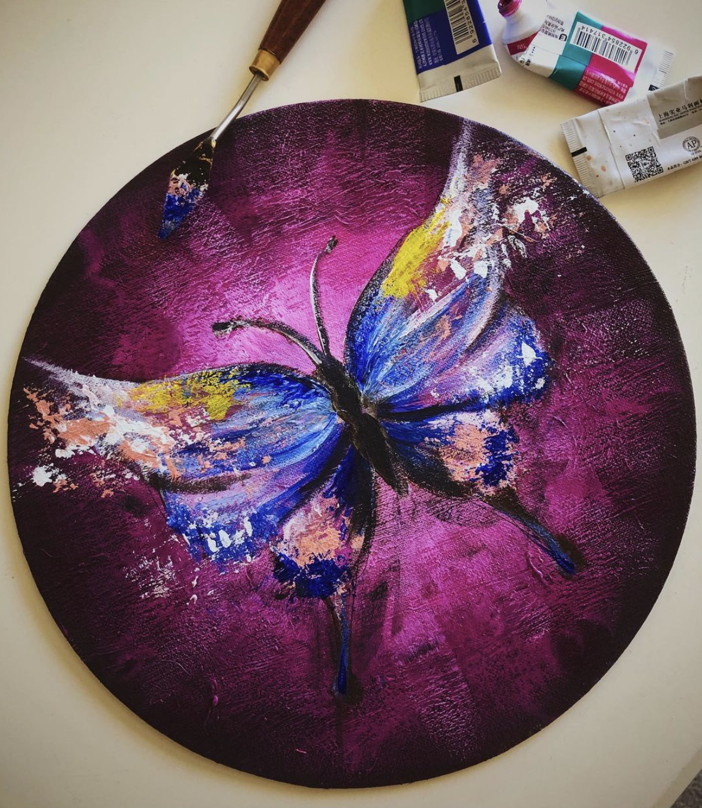

About Me



- Who I Am
- My Journey
- What I Do
- What I Aspire
Hello, I'm Hera Dashnyam. I'm a Mongolian researcher with a B.A. in Data Analytics, Bioinformatics concentration, and Environmental Science from Miami University, graduated Cum Laude. I care about building things that are practical, human centered, and meaningful, whether that's research that helps vulnerable populations or creative projects that tell a story. I come from a nomadic family that values resilience, humility, and curiosity, and I try to bring those values into everything I do, from volunteering to writing code.
I started college early and intentionally designed my academic path to graduate ahead of schedule, finishing my degree Cum Laude in three and a half years with multiple semesters on the President's List. Along the way, I balanced my studies with research internships, conservation work, and mentoring young students in Mongolia. I volunteered at career fairs, managed buildings on campus, and built presentations for kids about science, law, and the environment because I believe learning should feel exciting, not overwhelming. At Miami University, I conducted transcriptome research with Dr. Chun Liang, identifying and validating a novel readthrough transcript spanning the WNT5B region, and I worked with the Hogenesch Group at Cincinnati Children's Hospital analyzing RNA sequencing data with limma in R. It's technical, but also deeply creative, like building a language from fragments.
This past summer, I worked as a research intern at Vanderbilt University Medical Center with Dr. Kamran Idrees and Matthew Cottam, building a Python pipeline that screened 537 cBioPortal cancer studies to investigate TTN mutation burden as a candidate biomarker of tumor response to chemotherapy. Alongside that, I spent two years as a public health research assistant for Dr. Shenyue Jia, modeling the risk of power outages for medically vulnerable populations using ArcGIS, satellite nighttime light data, and public health datasets, work I presented as a poster at the AGU Fall Meeting. Right now, I'm based in Shenzhen, reaching out to research groups in bioinformatics and cancer genomics while I build toward a PhD in the U.S. It's a perfect blend of data, equity, and real world impact, and I couldn't be more excited to keep contributing.
I want to keep creating things that matter. In the long term, I hope to build tools that make environmental data more accessible and human centered, whether that's through climate resilience models, health equity maps, or intelligent data systems. I want to work in spaces where I can keep learning, keep building, and keep finding better questions. Whether I'm analyzing satellite images or helping a kid in Mongolia figure out their future, I want my work to quietly support something bigger than myself.